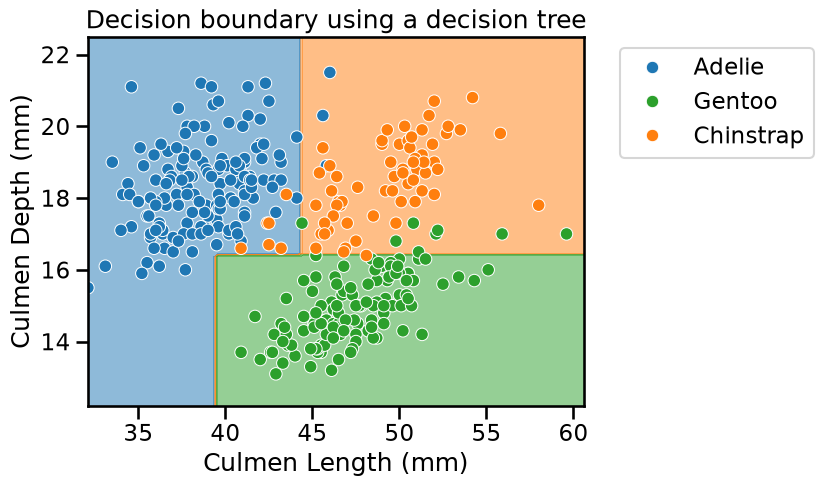
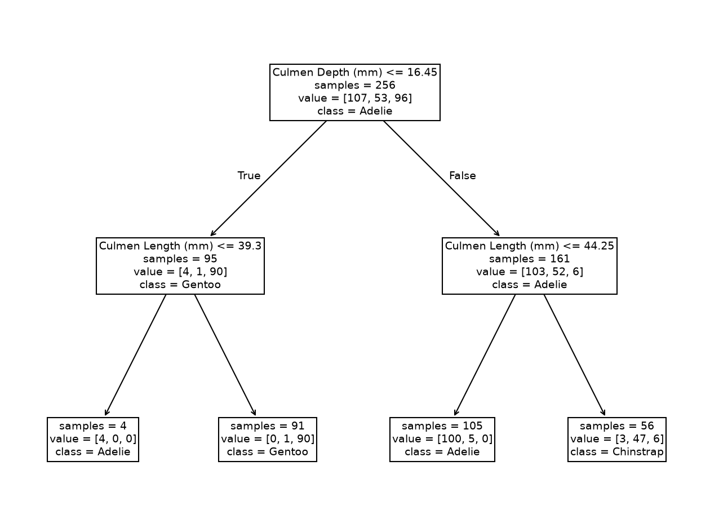
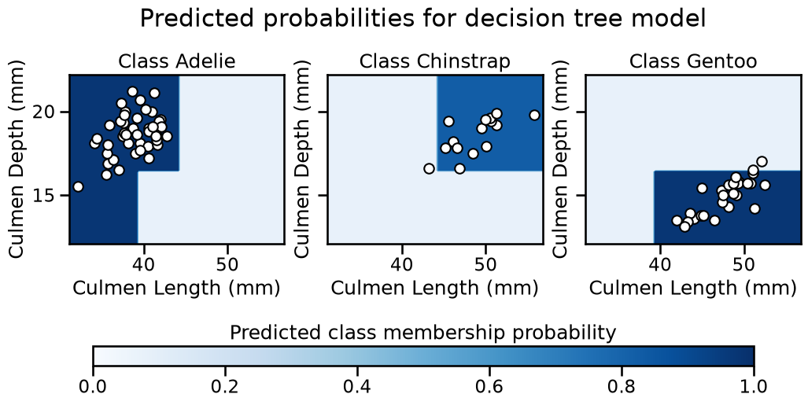

📃 Solution for Exercise M5.01#
In the previous notebook, we showed how a tree with 1 level depth works. The aim of this exercise is to repeat part of the previous experiment for a tree with 2 levels depth to show how such parameter affects the feature space partitioning.
We first load the penguins dataset and split it into a training and a testing sets:
import pandas as pd
penguins = pd.read_csv("../datasets/penguins_classification.csv")
culmen_columns = ["Culmen Length (mm)", "Culmen Depth (mm)"]
target_column = "Species"
Note
If you want a deeper overview regarding this dataset, you can refer to the Appendix - Datasets description section at the end of this MOOC.
from sklearn.model_selection import train_test_split
data, target = penguins[culmen_columns], penguins[target_column]
data_train, data_test, target_train, target_test = train_test_split(
data, target, random_state=0
)
Create a decision tree classifier with a maximum depth of 2 levels and fit the training data.
# solution
from sklearn.tree import DecisionTreeClassifier
tree = DecisionTreeClassifier(max_depth=2)
tree.fit(data_train, target_train)
DecisionTreeClassifier(max_depth=2)In a Jupyter environment, please rerun this cell to show the HTML representation or trust the notebook.
On GitHub, the HTML representation is unable to render, please try loading this page with nbviewer.org.
Parameters
Now plot the data and the decision boundary of the trained classifier to see the effect of increasing the depth of the tree.
Hint: Use the class DecisionBoundaryDisplay from the module
sklearn.inspection as shown in previous course notebooks.
Warning
At this time, it is not possible to use response_method="predict_proba" for
multiclass problems on a single plot. This is a planned feature for a future
version of scikit-learn. In the mean time, you can use
response_method="predict" instead.
# solution
import matplotlib.pyplot as plt
import matplotlib as mpl
import seaborn as sns
from sklearn.inspection import DecisionBoundaryDisplay
tab10_norm = mpl.colors.Normalize(vmin=-0.5, vmax=8.5)
palette = ["tab:blue", "tab:green", "tab:orange"]
DecisionBoundaryDisplay.from_estimator(
tree,
data_train,
response_method="predict",
cmap="tab10",
norm=tab10_norm,
alpha=0.5,
)
ax = sns.scatterplot(
data=penguins,
x=culmen_columns[0],
y=culmen_columns[1],
hue=target_column,
palette=palette,
)
plt.legend(bbox_to_anchor=(1.05, 1), loc="upper left")
_ = plt.title("Decision boundary using a decision tree")

Did we make use of the feature “Culmen Length”? Plot the tree using the
function sklearn.tree.plot_tree to find out!
# solution
from sklearn.tree import plot_tree
_, ax = plt.subplots(figsize=(16, 12))
_ = plot_tree(
tree,
feature_names=culmen_columns,
class_names=tree.classes_.tolist(),
impurity=False,
ax=ax,
)

The resulting tree has 7 nodes: 3 of them are “split nodes” and 4 are “leaf nodes” (or simply “leaves”), organized in 2 levels. We see that the second tree level used the “Culmen Length” to make two new decisions. Qualitatively, we saw that such a simple tree was enough to classify the penguins’ species.
Compute the accuracy of the decision tree on the testing data.
# solution
test_score = tree.fit(data_train, target_train).score(data_test, target_test)
print(f"Accuracy of the DecisionTreeClassifier: {test_score:.2f}")
Accuracy of the DecisionTreeClassifier: 0.97
At this stage, we have the intuition that a decision tree is built by successively partitioning the feature space, considering one feature at a time.
We predict an Adelie penguin if the feature value is below the threshold, which is not surprising since this partition was almost pure. If the feature value is above the threshold, we predict the Gentoo penguin, the class that is most probable.
(Estimated) predicted probabilities in multi-class problems#
For those interested, one can further try to visualize the output of
predict_proba for a multiclass problem using DecisionBoundaryDisplay,
except that for a K-class problem you have K probability outputs for each
data point. Visualizing all these on a single plot can quickly become tricky
to interpret. It is then common to instead produce K separate plots, one for
each class, in a one-vs-rest (or one-vs-all) fashion. This can be achieved by
calling DecisionBoundaryDisplay several times, once for each class, and
passing the class_of_interest parameter to the function.
For example, in the plot below, the first plot on the left shows the certainty of classifying a data point as belonging to the “Adelie” class. The darker the color, the more certain the model is that a given point in the feature space belongs to a given class. The same logic applies to the other plots in the figure.
from matplotlib import cm
_, axs = plt.subplots(ncols=3, nrows=1, sharey=True, figsize=(12, 5))
plt.suptitle("Predicted probabilities for decision tree model", y=1.05)
plt.subplots_adjust(bottom=0.45)
for idx, (class_of_interest, ax) in enumerate(zip(tree.classes_, axs)):
ax.set_title(f"Class {class_of_interest}")
DecisionBoundaryDisplay.from_estimator(
tree,
data_test,
response_method="predict_proba",
class_of_interest=class_of_interest,
ax=ax,
vmin=0,
vmax=1,
cmap="Blues",
)
ax.scatter(
data_test["Culmen Length (mm)"].loc[target_test == class_of_interest],
data_test["Culmen Depth (mm)"].loc[target_test == class_of_interest],
marker="o",
c="w",
edgecolor="k",
)
ax.set_xlabel("Culmen Length (mm)")
if idx == 0:
ax.set_ylabel("Culmen Depth (mm)")
ax = plt.axes([0.15, 0.14, 0.7, 0.05])
plt.colorbar(cm.ScalarMappable(cmap="Blues"), cax=ax, orientation="horizontal")
_ = ax.set_title("Predicted class membership probability")

Note
You may notice that we do not use a diverging colormap (2 color gradients with white in the middle). Indeed, in a multiclass setting, 0.5 is not a meaningful value, hence using white as the center of the colormap is not appropriate. Instead, we use a sequential colormap, where the color intensity indicates the certainty of the classification. The darker the color, the more certain the model is that a given point in the feature space belongs to a given class.